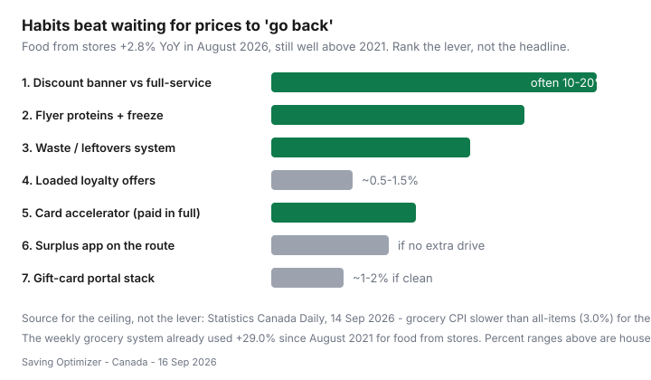

Food & Groceries · Canada
Canadian grocery prices in 2026: what’s rising and the levers that still work
Headline inflation anxiety is a terrible grocery list. Canadians refresh CPI charts, then still buy out-of-season berries at a full-service banner. The useful 2026 story is quieter: grocery inflation slowed, the level of prices is still high, and the same levers still work — store choice, flyer proteins, waste, then points.
This piece anchors to Statistics Canada, ranks the levers, notes provincial differences without fake city indexes, and gives you a 30-day experiment. It will not predict next month’s chicken. It will stop you doomscrolling The Daily instead of opening Flipp.
Disclosure: Cashback portals, grocery reward credit cards, and meal-kit trials are optional offer types around the edges of this plan. Saving Optimizer may earn a commission if we later add partner links. No partnerships are claimed. Official figures below are public Statistics Canada and academic report numbers, not affiliate bait.
Key takeaways
- August 2026: food from stores +2.8% year over year; all-items CPI +3.0% (Statistics Canada Daily, 14 Sep 2026). Grocery growth fell below headline inflation for the first time since July 2024.
- Dairy led the grocery slowdown that month (cheese and yogurt). Fresh fruit was still up 4.7% year over year in the same release.
- Habits beat waiting for 2021 prices. A discounter plus flyer proteins still move the bill more than 0.8% points.
- Run a 30-day experiment on three levers only. Track receipts, not vibes.
- No invented “searches per month.” Demand is high because households can feel the till.
StatsCan food-from-stores context (without fearmongering)
On 14 September 2026, Statistics Canada reported that prices for food purchased from stores rose 2.8% year over year in August, down from 3.1% in July. The all-items CPI was 3.0% in both months. For the first time since July 2024, grocery-price growth was slower than headline inflation.
That is deceleration, not a sale. Our weekly grocery system already cited the same Daily for the longer bruise: food from stores still 29.0% above August 2021. Dairy products slowed sharply in August 2026 (+0.7% year over year versus +3.1% in July). Smaller increases in pork, condiments, and fresh fruit also helped the slowdown — fruit itself was still +4.7%.
Household context, not a dare: the Survey of Household Spending for 2023 (Daily, 21 May 2025) put average food from stores at $8,659 and restaurants at $3,351. Canada’s Food Price Report 2026 (Dalhousie University et al., 4 Dec 2025) forecast overall food prices up 4–6% and a model family of four up to $17,571.79 for the year. Use those as ceilings and conversation, not as your budget. Your baseline is four weeks of your receipts, including the Shoppers chocolate.
Official bookmarks: Statistics Canada Food Price Data Hub and The Daily CPI. Refresh after each CPI morning — do not refresh instead of shopping the list.
Why habits beat waiting for prices to ‘go back’
CPI is a year-over-year speedometer. It does not reverse the last five years at the till. If you wait for thighs to look like 2019, you will keep paying 2026 while practising nothing. The operating system in the weekly grocery loop is how you live at this price level: Flipp, one loyalty program, surplus only on the route, list first.
Highest-ROI levers ranked

| Lever | Why it still works in 2026 | Guide |
|---|---|---|
| Discount banner vs full-service | Shelf gaps of 10–20% show up in city baskets more often than points | Banner rotation |
| Flyer proteins + freeze | Meat is a fat slice of the store bill; Thursday still moves it | Flyer meals |
| Waste / leftovers | You already paid 2026 prices; composting them is a second tax | Family systems |
| Loaded loyalty | ~0.5–1.5% typical offers; Moi base is provincial | PC vs Scene+ vs Moi |
| Card accelerator, paid in full | 1–6% at the right till; 0% at the wrong network | Pay stack |
| Surplus apps | Only if pickup is on the route | Flashfood / TGTG / FoodHero |
| Gift-card portals | ~1–2% when exclusions do not fire | Gift cards |
Meal kits can cover a brutal week. As a default grocery system they usually lose to flyer thighs and rice. Costco is a monthly bulk lever, not a CPI hedge — split the cart.
Provincial price level differences (high level)
Do not invent a city ranking. Statistics Canada publishes CPI by geography; remote communities and some Atlantic markets often sit higher on food, while large discounter cities in Ontario, Quebec, and the Prairies look cheaper on the same national SKU. Territories and fly-in groceries are a different problem than a Mississauga No Frills.
Practical translation: use your two-banner Flipp pin, not a national average chicken price. Quebec discounters (Maxi, Super C) pair with PC and Moi respectively. Western households should still check Save-On More Rewards before assuming Ontario’s three-empire map owns the West.
Building a 30-day savings experiment
- Week 0: Photograph four weeks of old receipts if you have them. If not, this month becomes the baseline. Include convenience stores and apps.
- Pick three levers only. Example: shop only the discounter; plan five dinners from Flipp proteins; freeze leftover meat. Do not also open three new cards.
- Run four Sundays of the 20-minute loop. Same store unless a documented second stop wins.
- Compare dollar totals, not vibes. If the bill fell $20 a week, that is $1,000 a year-shaped. If it did not, you learned which lever was theatre.
- Keep one lever that stuck. Add loyalty loading or a matching card only after the shelf is honest.
What not to obsess over
Shrinkflation outrage without a unit-price check. Daily CPI refreshes. Switching banners for 40 cents of points. Driving across town for a $2 yogurt after diesel. Perfect protein grams from a $15 ready-to-drink. You are allowed to buy the cookies. Put them on the list as the one flex item.
Resources for ongoing price literacy
- Statistics Canada Food Price Data Hub and The Daily (CPI mornings).
- Canada’s Food Price Report each December — forecast, not a till.
- Flipp / Reebee for this week’s legal ads.
- Your five-line price book (eggs, thighs, milk, oats, tomatoes).
- This hub’s weekly systems when you need the how, not the mood.
Protein-specific shopping is in cheap high-protein meals. Card and portal stacks come last, after the discounter is a habit.
Sources & date stamps
- Statistics Canada, The Daily — Consumer Price Index, August 2026 (released 14 Sep 2026): food from stores +2.8%; all-items +3.0%; dairy slowdown; fruit +4.7%; first grocery-vs-headline crossover since July 2024.
- Statistics Canada Food Price Data Hub (statcan.gc.ca/en/topics-start/food-price).
- Statistics Canada, Survey of Household Spending 2023 (Daily, 21 May 2025): $8,659 food from stores; $3,351 restaurants.
- Canada’s Food Price Report 2026, Dalhousie University et al. (4 Dec 2025): family-of-four forecast up to $17,571.79.
Frequently asked questions
Are Canadian grocery prices still rising in 2026?
Yes, but slower. Statistics Canada’s Daily of 14 Sep 2026 put food purchased from stores at +2.8% year over year in August 2026, below the 3.0% all-items CPI for the first time since July 2024. The five-year level is still much higher than 2021.
Will prices go back to 2019?
Do not budget on that. CPI measures change from last year, not a reset. Build habits that work at today’s shelf prices.
What saves the most money on Canadian groceries?
Usually shopping a discount banner instead of a full-service store, then planning dinners from flyer proteins, then wasting less. Points, cards, and portals are smaller layers.
Do grocery prices differ by province?
Yes at a high level — remote and some Atlantic markets run hotter; large Prairie and Ontario discounter cities often look cheaper on the same national brand. Use local flyers, not a national average, for this week’s chicken.
Where should I check official food prices?
Statistics Canada’s Food Price Data Hub and The Daily CPI release. Canada’s Food Price Report (Dalhousie and partners) is a useful forecast, not a till price.